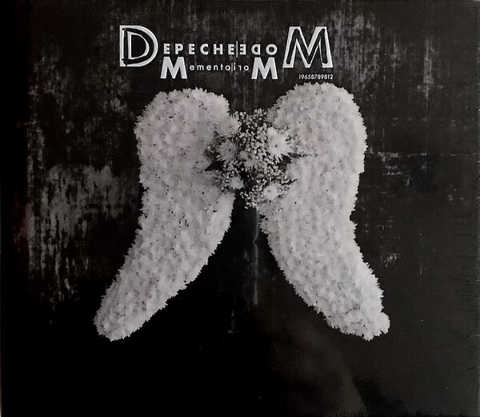

MEMENTO MORI ALBUM

Depeche Mode had nearly finished their fourth full decade and 14th full-length before a Martin Gore-Dave Gahan cowrite finally made an album. That was “You Move,” a throbbing bit of tossed-off electro pop nestled near the center of 2017’s Spirit, a political quagmire of topical indignation. Amid that sloganeering, “You Move” was not an entirely auspicious debut, notable mostly for how it framed Gahan and Gore’s threadbare relationship. During those sessions, third member and interstitial glue, Andy Fletcher, had to be physically removed from the studio so his more famous former chums could freely vent. “If you give me something you and I can play,” Gahan soon taunted on their song together. “Let me ring your bell.”
The pair’s second cowrite, though, feels less like an obligation or a marriage-counseling exercise than the dawn of a new dynamic. “Wagging Tongue” arrives early into Memento Mori, the band’s most engaged album in more than two decades, Gore’s sunbeam sequencers a perfect foil for his golden-voice goth. It’s an elliptical tale of risk, alienation, and—slowly, unsteadily, improbably—renewal. “I won’t be persuaded,” they sing together near the end, Gore’s harmony as wavy as his totemic golden hair. “Kiss your doubts goodbye.”
The doubts that Memento Mori would even exist were enormous. Just before the trio reconvened in Gore’s Santa Barbara studio (and only after Gahan overcame his entrenched reluctance to reconvene at all), Fletcher died suddenly at home in London, the primary vessel from his heart having ripped apart. Fletcher, only 60, had been the band’s indispensable “vibe tech,” the oil inside its hot engine. Though he didn’t write or really even play, Fletcher served as the intermediary for the often acrimonious pair who did, especially when Gahan began itching to put songs of his own on Depeche Mode’s Gore-penned albums. Without him, they wondered, could they function without falling apart? “We kind of had to… really decide, are we going to finish?” Gore recently told MOJO. “Or do we carry on?” They chose the latter, finding new ways to work together, if not discovering altogether new sounds.
This darkness and doubt—always Depeche Mode’s perpetually renewing lifeblood—permeate Memento Mori’s best songs. Opener “My Cosmos Is Mine” unspools over a mosaic of shattered static and cryospheric synths. In elegant Scott Walker finery, Gahan aces the role of the narrator who’d rather be lied to than given more bad news. There’s a whiff of The Wall’s politics here, especially when chants of “No war!” arrive, but its animating question is symptomatic of grief itself: How much more can you handle, mortal? “Don’t stare at my soul,” Gahan sings, as steady and loaded as the serpent waiting to strike. “I swear it is fine.”
That croon returns for closer “Speak to Me,” a gorgeous bit of Gahan-shaped melancholia that begins like some beatific church hymn but exits beneath a barrage of cursed noise. It’s a devoted love song hamstrung by self-loathing, Gahan worried he’s not good enough for anyone but himself. Along with the mid-album Nick Cave-and-a-drum-machine fever dream “Caroline’s Monkey,” these frames hold Memento Mori in a sort of permanent pallor. This record is more concerned with surviving than succeeding—ironic, then, that this brooding triptych is as new and open-ended as Depeche Mode have sounded this century.
But Depeche Mode became superstars by lighting up the dark, by turning individual despair or nihilism into sing-alongs to be shared. They try that here, with a separate trio that winks at their crowning achievements, albeit indirectly. “People Are Good” and “Never Let Me Go” not only share the first half of their titles with two of Depeche Mode’s most titanic hits but also their anthemic ambitions. Ebullient, danceable, and deeply disappointed, “People Are Good” is the confession of a recovering pessimist realizing maybe he was right, that our very nature ensures our doom. The swift and slicing “Never Let Me Go” swivels on the brand of anxious guitar hook that’s long been the band’s secret weapon. It underscores the facade of neurotic self-confidence Gahan offers so well, begging for love while pretending he is already love incarnate.
The Gore-Gahan cowrite isn’t the only collaboration here. Gore wrote a third of the album with Psychedelic Furs whiz Richard Butler, introducing a new vulnerability to Depeche Mode’s long-hermetic world. (For his part, Gahan wrote with the touring band, producer James Ford, and engineer Marta Salogni, an intriguing sound artist herself.) The pair’s work on “Ghosts Again”—the first single, the first time Depeche Mode have neared the sound of a real hit in many years—convinced Gahan that returning to the fold was worth the bother. It is deliciously unfussy, its fluorescent keys and four-on-the-floor insistence giving Gahan space for a little carpe diem proselytizing, clear of the chaos. It somehow finds the crossroads of Katy Perry’s “Firework” and New Order’s “Bizarre Love Triangle,” then shoots up its own signal flare for the living.
That is, alas, as close as Memento Mori gets to a smash, to reaching one of those undeniable highs that seeps into your psyche by merely existing, à la “Just Can’t Get Enough.” This is absolutely Depeche Mode at their best since Ultra, but there’s probably nothing here that introduces them to an entirely new audience, unlike Ultra. Still, “Soul with Me” is the only true miss, less mid-album fermata than full-on slog: a slow dance of shuffling drums, tremolo guitars, and elementary end-rhyme. Its maudlin sense of self-pity runs counter to the unlikely endurance tale that is Memento Mori, an album that almost died with Fletcher in London.
Most Read Reviews
After more than 40 years, it is astonishing and redeeming how rarely Depeche Mode have been embarrassing. Yes, they’re a quarter-century removed from their last megahits, but they’ve never deigned to the menial tasks of senescence—cruise ships, state fairs, full-album tours. Rather than play it safe and demure when neo-Nazi droog Richard Spencer claimed Depeche Mode for the right, Gahan went all in, dubbing him “a very educated cunt … the scariest kind of all.” They’ve suffered addiction, abdication, near-death, and, now, death itself, but they’ve never made a truly awful record by chasing trends they’d already missed. For all their dependable despair, Depeche Mode thrive more on persistence and self-respect.
Memento Mori is, ultimately, a manifestation of both. Rather than end with a friend’s death and, consequently, a relatively forgettable album beset by personnel issues, Gahan and Gore chose to get closer and try again. Memento Mori is not the hooded masterpiece of Music for the Masses or the hits cache of Violator. But it does signal that there are new ways yet for Gahan and Gore to at least approach their old magic. Given their peak-and-valley past, perhaps that’s old news. In the end, as Gore wrote and Gahan sang in 1982, maybe people are basically the same.